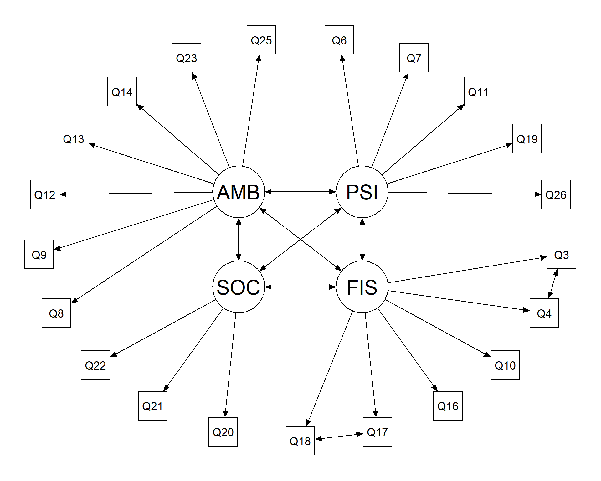
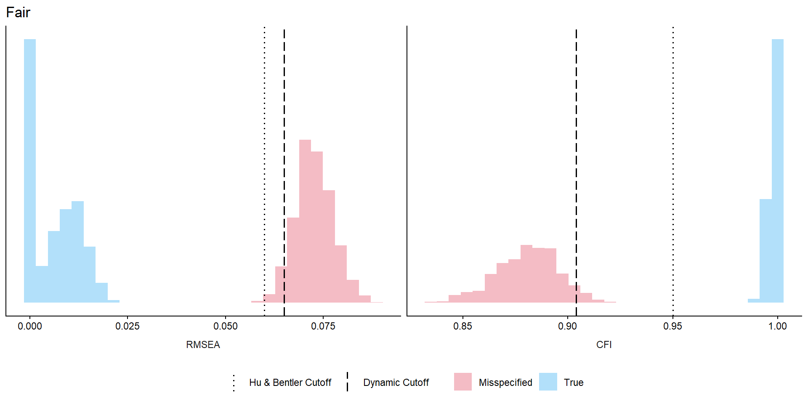
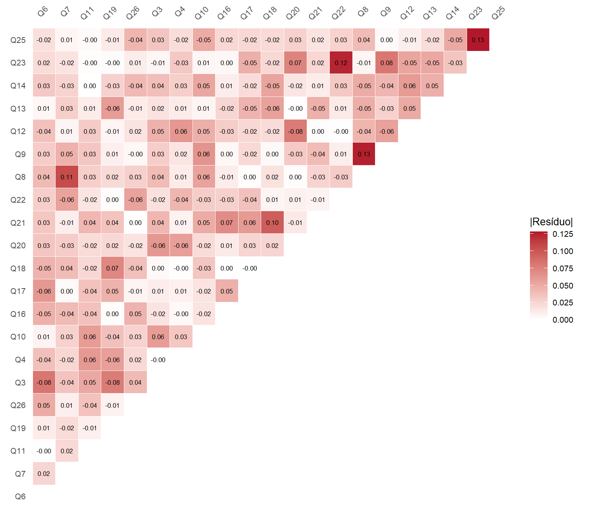

| Prioridade de atenção na literatura | Item ou relação | Síntese das evidências na literatura |
|---|---|---|
| Alta | Q8 — segurança na vida diária | Apresenta ambiguidade entre os domínios ambiental e psicológico, com registros de cargas cruzadas, realocações e exclusões. É uma das divergências de alocação mais claras nas fontes consultadas. |
| Alta | Q10 — energia e fadiga | Há evidências de sobreposição entre os domínios físico e psicológico, expressas por cargas cruzadas e alocações alternativas. |
| Alta | Q14 — lazer | Apresenta registros de carga cruzada, realocação, exclusão e dependência residual com Q5, embora também tenha boa representação ambiental na síntese exploratória. |
| Alta | Q15 — mobilidade | Há registros de exclusão, inclusive em amostras de língua portuguesa, e de alocação em agrupamentos ambientais. Os achados indicam variação na representação da mobilidade entre contextos. |
| Moderada | Q3–Q4 — dor e necessidade de tratamento | Apresentam correlação residual recorrente e, em algumas soluções, formam uma dimensão própria. Sua retenção ou exclusão varia com o contexto clínico da amostra. |
| Moderada | Q5 — prazer de viver | Há registros de correlação residual com Q6 e Q14, alocação alternativa e exclusão em contextos específicos. A síntese exploratória também mostra forte representação do domínio psicológico. |
| Moderada | Q9 — ambiente físico | Apresenta registros de carga cruzada, correlação residual com Q8 e exclusão em contexto específico, indicando dificuldades na delimitação entre ambiente e percepção psicológica. |
| Moderada | Q19 — autoestima | Apresenta registros de correlação residual e alocações alternativas, ao lado de forte representação do domínio psicológico na síntese exploratória. |
| Moderada | Q26 — sentimentos negativos | Há registros de exclusão em diferentes contextos, embora a síntese exploratória também sustente sua representação no domínio psicológico. |
| Moderada | Q17–Q18 — atividades diárias e capacidade de trabalho | Há precedentes de covariância residual, cargas cruzadas e agrupamento em outra dimensão. A proximidade funcional e a dependência local constituem o argumento mais direto para a relação entre os itens. |
| Moderada | Q24–Q25 — acesso aos serviços e transporte | Há precedentes de correlação residual e de exclusão em uma solução reduzida, além de evidências de representação de ambos no domínio ambiental. |
| Moderada | Q12–Q13 — recursos financeiros e acesso à informação | Há precedentes de covariância residual entre os itens e de exclusão de ambos em uma solução reduzida. Os achados indicam variação na representação desses conteúdos ambientais. |
| Pontual | Q16 — sono e repouso | Há registro de exclusão em contexto específico. A evidência reunida oferece menor convergência para caracterizar uma dificuldade geral de representação. |
| Pontual | Q22 — apoio social | Há registros de exclusão em contextos específicos, mas a evidência reunida é menos consistente para caracterizar uma dificuldade geral de representação. |
8 Comparações e modificações dos modelos
8.1 Fundamentação das modificações
O diagnóstico da Seção 7 destacou dificuldades de representação que orientam potenciais modificações em nosso modelo H0. A seleção das alterações considera a tamanho das cargas, cargas cruzadas, correlações residuais e conteúdo dos indicadores, em diálogo com os precedentes bibliográficos. A Tabela 8.1 sintetiza variações de representação fatorial descritas por Lin & Yao (2022) e por Mosqueira Taipe et al. (2026). O levantamento abrange também indicadores que serão preservados, oferecendo um panorama das dificuldades documentadas para o instrumento.
Fontes: Lin & Yao (2022) e Mosqueira Taipe et al. (2026). Os estudos individuais são conhecidos por intermédio dessas sínteses.
Nota: A prioridade de atenção na literatura considera a recorrência dos registros e suas implicações para a interpretação do modelo, atribuindo maior peso às cargas cruzadas, seguido da exclusão de itens (cargas baixas) e das covariâncias residuais. A classificação avalia o conjunto das evidências de cada foco. A seleção reúne achados destacados pelas revisões e precedentes recorrentes ou considerados relevantes.
NotaRacional da Tabela 8.1
Finalidade
Apresentar a síntese bibliográfica que informa a avaliação das possíveis modificações do modelo.
Preparação
Utilize o levantamento curado Data/InputData/Metadata/whoqol_modification_evidence.csv, preparado e revisado antes desta análise.
Procedimento
O bloco lê o arquivo em modification_evidence e apresenta uma linha por item ou relação, preservando os cabeçalhos e a ordem das prioridades. O levantamento é um insumo da análise: as fontes e a nota de classificação são informadas diretamente abaixo da tabela.
Execução e resultado
Execute o bloco para ler o levantamento e apresentar a tabela, sem gerar ou alterar a síntese bibliográfica.
Código
# Read the author-reviewed literature synthesis prepared before.
modification_evidence <- readr::read_csv2(
here::here(
"Data", "InputData", "Metadata", "whoqol_modification_evidence.csv"
),
show_col_types = FALSE
)
# Print the table in Markdown format for Quarto rendering.
knitr::kable(
modification_evidence,
format = "pipe",
align = c("l", "l", "l"),
row.names = FALSE
)A especificação modificada para as análises adiante exclui Q5, Q15 e Q24. Em Q5, a concentração de correlações com Q6 e Q14 e as indicações de cargas cruzadas apontam dificuldades de delimitação entre conteúdos. A literatura registra essas dependências e alterações de alocação, ao mesmo tempo que a síntese de Lin & Yao (2022) mostra forte representação psicológica. Sua exclusão responde às dificuldades locais observadas nesta amostra. Para Q15, a carga reduzida e a indicação de relação com o domínio ambiental convergem com precedentes de exclusão em amostras de língua portuguesa e de alocação alternativa. Q24 combina carga reduzida e dependência com Q25, relação também documentada na literatura (Lin & Yao, 2022; Mosqueira Taipe et al., 2026).
Q3, Q4 e Q8 permanecem apesar das cargas baixas. Dor e necessidade de tratamento representam aspectos da condição física cuja relevância varia com o contexto clínico. A revisão documenta a retenção de Q3/Q4 em pacientes e sua exclusão em grupos de estudantes. Mantemos esses conteúdos e a covariância residual Q3–Q4 já prevista na especificação original. Q8 preserva a percepção de segurança no domínio ambiental. Sua proximidade com o domínio psicológico, destacada nas duas sínteses, será considerada na interpretação do ajuste remanescente (Lin & Yao, 2022; Mosqueira Taipe et al., 2026).
Acrescentamos a covariância residual Q17–Q18. A capacidade para realizar atividades cotidianas e a capacidade para o trabalho compartilham um conteúdo funcional específico, além da condição física geral. A revisão registra essa covariância em estudos com participantes com cefaleia crônica e trabalhadores da saúde brasileiros; o agrupamento dos itens em outra dimensão oferece evidência complementar dessa proximidade. A relação residual representa essa associação específica e preserva ambos os indicadores no fator físico (Lin & Yao, 2022; Mosqueira Taipe et al., 2026).
O modelo mantém quatro fatores e os três indicadores sociais, com 21 itens: 5 psicológicos, 6 físicos, 3 sociais e 7 ambientais. As exclusões reduzem a cobertura explícita de prazer de viver, mobilidade e acesso aos serviços de saúde, devendo acompanhar a interpretação dos escores modificados. A seleção foi informada pelo diagnóstico dessa amostra e constitui uma revisão exploratória. A reestimação avaliará essa especificação delimitada, incluindo as dificuldades remanescentes, e a confiabilidade será recalculada para os conjuntos de itens retidos. A Figura 8.1 apresenta a especificação resultante, com as duas covariâncias residuais e os indicadores preservados.

NotaRacional da Figura 8.1
Finalidade
Representar a estrutura do modelo modificado antes de sua estimação.
Preparação
Utilize adjustedzemodel, definido em models.R, e a preparação geral da Seção 3.
Procedimento
A chamada reutiliza plot_color() e as abreviações de LABELS, apresentados na Seção 3. O argumento what_labels = "no" omite os valores nas relações, destacando a estrutura especificada.
Execução e resultado
Execute o bloco para apresentar o diagrama do modelo modificado.
Código
# Draw the adjusted model without numerical edge labels.
plot_color(adjustedzemodel, node_labels = LABELS, what_labels = "no")8.2 Parâmetros estimados
O modelo modificado é estimado com a mantução das condições de estimação da Seção 6. A avaliação apresenta os parâmetros, verifica a solução e examina o ajuste global e as discrepâncias locais da especificação selecionada. A Tabela 8.2 apresenta os parâmetros do modelo modificado.
| Relação | Estimativa | EP | z | Padronizada |
|---|---|---|---|---|
| psycho =~ Q6 | 0.604 | 0.028 | 21.572 | 0.620 |
| psycho =~ Q7 | 0.562 | 0.023 | 24.481 | 0.655 |
| psycho =~ Q11 | 0.623 | 0.028 | 22.209 | 0.626 |
| psycho =~ Q19 | 0.772 | 0.022 | 34.787 | 0.820 |
| psycho =~ Q26 | 0.552 | 0.028 | 19.404 | 0.593 |
| physical =~ Q3 | 0.395 | 0.030 | 13.176 | 0.420 |
| physical =~ Q4 | 0.390 | 0.033 | 11.856 | 0.387 |
| physical =~ Q10 | 0.695 | 0.022 | 32.045 | 0.771 |
| physical =~ Q16 | 0.568 | 0.028 | 20.198 | 0.549 |
| physical =~ Q17 | 0.747 | 0.022 | 33.472 | 0.811 |
| physical =~ Q18 | 0.713 | 0.025 | 28.427 | 0.747 |
| social =~ Q20 | 0.708 | 0.023 | 30.220 | 0.795 |
| social =~ Q21 | 0.512 | 0.030 | 16.903 | 0.508 |
| social =~ Q22 | 0.638 | 0.025 | 25.388 | 0.723 |
| environment =~ Q8 | 0.465 | 0.030 | 15.452 | 0.475 |
| environment =~ Q9 | 0.507 | 0.027 | 18.526 | 0.573 |
| environment =~ Q12 | 0.754 | 0.030 | 25.221 | 0.686 |
| environment =~ Q13 | 0.513 | 0.028 | 18.657 | 0.620 |
| environment =~ Q14 | 0.652 | 0.028 | 23.635 | 0.682 |
| environment =~ Q23 | 0.472 | 0.029 | 16.141 | 0.498 |
| environment =~ Q25 | 0.463 | 0.031 | 15.054 | 0.474 |
NotaRacional da Tabela 8.2
Finalidade
Estimar o modelo modificado e apresentar suas cargas fatoriais.
Preparação
Utilize a base Data/AnalysisData/whoqol_analysis.csv e adjustedzemodel, disponível na preparação desta seção conforme a orientação geral da Seção 3.
Procedimento
O bloco lê a base e estima o modelo nas mesmas condições da Seção 6. A função table_par(), apresentada no racional da Tabela 6.1, mantém a seleção padrão de cargas livres e os rótulos em português.
O atributo par_data disponibiliza os parâmetros completos para os valores inseridos no texto; table_data fornece a tabela de apresentação. Após verificar seu conteúdo, o bloco exporta as mesmas células exibidas, preservando rótulos, ordem e valores. Para aplicar o procedimento a outra pesquisa, a especificação e os indicadores devem ser revistos, assim como a adequação das condições de estimação.
Execução e resultado
Execute o bloco para criar fit_adjustedzemodel, apresentar as cargas e salvar tbl-adjusted-parameters.csv em Output/Results/Tables. O ajuste alimenta os diagnósticos seguintes.
Código
# Read the preprocessed analysis data.
analysis_data <- readr::read_csv2(
here::here("Data", "AnalysisData", "whoqol_analysis.csv"),
na = c("", "NA"), show_col_types = FALSE
)
# Fit the adjusted model using MLR/FIML and unit latent variances.
fit_adjustedzemodel <- lavaan::cfa(
model = adjustedzemodel, data = analysis_data, estimator = "MLR",
missing = "fiml", std.lv = TRUE
)
# Prepare the formatted loading table in Portuguese.
parameter_table_adjusted <- table_par(fit_adjustedzemodel, lang = "pt")
# Preserve full-precision parameters for the values inserted in the text.
parameter_estimates_adjusted <- attr(parameter_table_adjusted, "par_data")
# Validate and export exactly the content displayed in the table.
parameter_table_data_adjusted <- attr(parameter_table_adjusted, "table_data")
if (!is.data.frame(parameter_table_data_adjusted) ||
nrow(parameter_table_data_adjusted) == 0L) {
stop("table_data is missing. Reload helpers.R and rerun this chunk.")
}
readr::write_excel_csv2(
parameter_table_data_adjusted,
here::here("Output", "Results", "Tables", "tbl-adjusted-parameters.csv"),
na = "NA"
)
# Present the formatted loading table.
parameter_table_adjustedAs cargas de Q3, Q4 e Q8 permanecem modestas: 0,420, 0,387 e 0,475, respectivamente. A retenção desses indicadores preserva os conteúdos de dor, necessidade de tratamento e segurança, reconhecendo a representação parcial desses aspectos pelos fatores. Embora as cargas modestas permitam cogitar a exclusão de Q3, Q4 e Q8, optamos por preservar esses indicadores e a covariância Q3–Q4, limitando a exploração posterior. Modificações sucessivas poderiam favorecer um ajuste excessivo às particularidades dessa amostra, com menor possibilidade de generalização.
O modelo convergiu e não apresentou variâncias negativas nem cargas padronizadas com magnitude superior a 1. Essas verificações sustentam a admissibilidade da solução para a avaliação do ajuste global e local (Brown, 2015; Nye, 2022).
8.3 Ajuste global do modelo modificado
A Tabela 8.3 apresenta os índices de ajuste do modelo modificado: χ² ajustado, CFI, TLI e RMSEA robustos, intervalo de confiança de 90% do RMSEA e SRMR. Os valores descrevem o modelo de 21 indicadores.
| Medida | Valor |
|---|---|
| N | 1243 |
| χ² ajust. | 630.857 |
| df | 181 |
| p-valor | < 0.001 |
| CFI (robusto) | 0.945 |
| TLI (robusto) | 0.936 |
| RMSEA (robusto) | 0.049 |
| RMSEA IC90% inf. | 0.045 |
| RMSEA IC90% sup. | 0.053 |
| p (RMSEA ≤ 0,05) | 0.639 |
| SRMR | 0.035 |
NotaRacional da Tabela 8.3
Finalidade
Organizar as medidas de ajuste global do modelo modificado.
Preparação
Utilize fit_adjustedzemodel, estimado no bloco da Tabela 8.2.
Procedimento
O procedimento aplica table_fit(), apresentada no racional da Tabela 7.1, ao ajuste modificado. As medidas completas são recuperadas em fit_data_adjusted e organizadas em um vetor nomeado para consulta e uso no texto. A tabela de apresentação é verificada e exportada com os mesmos rótulos, ordem e valores exibidos.
Execução e resultado
Execute o bloco para apresentar a síntese e salvar tbl-adjusted-model-fit-global.csv em Output/Results/Tables, sem repetir a estimação.
Código
# Prepare the formatted global fit table in Portuguese.
fit_table_adjusted <- table_fit(fit_adjustedzemodel, lang = "pt")
# Preserve full-precision measures for the values inserted in the text.
fit_data_adjusted <- attr(fit_table_adjusted, "fit_data")
fit_measures_adjusted <- stats::setNames(
fit_data_adjusted$estimate, fit_data_adjusted$measure
)
# Validate and export exactly the content displayed in the table.
fit_table_data_adjusted <- attr(fit_table_adjusted, "table_data")
if (!is.data.frame(fit_table_data_adjusted) ||
nrow(fit_table_data_adjusted) == 0L) {
stop("table_data is missing. Reload helpers.R and rerun this chunk.")
}
readr::write_excel_csv2(
fit_table_data_adjusted,
here::here("Output", "Results", "Tables", "tbl-adjusted-model-fit-global.csv"),
na = "NA"
)
# Present the formatted global fit table.
fit_table_adjustedO modelo apresentou CFI robusto de 0,945, TLI robusto de 0,936, RMSEA robusto de 0,049 e SRMR de 0,035. Os índices do modelo modificado são descritivamente mais favoráveis que os das especificações originais. Essa diferença deve ser interpretada considerando também a redução de 24 para 21 indicadores. Para o ajuste próximo, o teste da hipótese RMSEA robusto ≤ 0,05 apresenta p = 0,639, superior a 0,05. Assim, a hipótese de ajuste próximo não é rejeitada, diferentemente das especificações originais.
8.4 Confiabilidade dos escores
A Tabela 8.4 apresenta o ômega e o GLB dos quatro escores, recalculados com os itens retidos. O ômega incorpora a especificação modificada, incluindo suas covariâncias residuais; o GLB mantém o pressuposto de erros não correlacionados e requer a mesma cautela de interpretação já discutida (Cho, 2022; Flora, 2020; Trizano-Hermosilla & Alvarado, 2016).
| Fator | Itens | Ômega | GLB |
|---|---|---|---|
| psycho | 5 | 0.792 | 0.813 |
| physical | 6 | 0.732 | 0.864 |
| social | 3 | 0.712 | 0.706 |
| environment | 7 | 0.774 | 0.826 |
NotaRacional da Tabela 8.4
Finalidade
Recalcular a confiabilidade dos escores correspondentes aos itens retidos no modelo modificado.
Preparação
Utilize fit_adjustedzemodel, estimado no bloco da Tabela 8.2.
Procedimento
A chamada utiliza table_reliability(), apresentada no racional da Tabela 7.2. A composição de cada escore é obtida do ajuste modificado; ômega e GLB correspondem ao mesmo conjunto de itens em cada domínio.
O atributo reliability_data preserva coeficientes completos, composição dos escores e resultados nativos para consulta. O conteúdo de table_data é verificado e exportado com os mesmos rótulos e valores apresentados.
Execução e resultado
Execute o bloco para apresentar a confiabilidade e salvar tbl-adjusted-domain-reliability.csv em Output/Results/Tables, utilizando o ajuste existente.
Código
# Prepare the formatted score reliability table in Portuguese.
reliability_table_adjusted <- table_reliability(fit_adjustedzemodel, lang = "pt")
# Preserve full-precision coefficients for the values inserted in the text.
reliability_adjusted <- attr(reliability_table_adjusted, "reliability_data")
# Validate and export exactly the content displayed in the table.
reliability_table_data_adjusted <- attr(reliability_table_adjusted, "table_data")
if (!is.data.frame(reliability_table_data_adjusted) ||
nrow(reliability_table_data_adjusted) == 0L) {
stop("table_data is missing. Reload helpers.R and rerun this chunk.")
}
readr::write_excel_csv2(
reliability_table_data_adjusted,
here::here("Output", "Results", "Tables", "tbl-adjusted-domain-reliability.csv"),
na = "NA"
)
# Present the formatted score reliability table.
reliability_table_adjustedAs exclusões alteram a composição dos escores psicológico, físico e ambiental; o escore social preserva seus três indicadores. O ômega e o GLB permanecem acima de 0,70 em todos os domínios, indicando confiabilidade adequada para a interpretação dos escores modificados (Cho, 2022; Trizano-Hermosilla & Alvarado, 2016).
Os ômegas variam de 0,712 a 0,792; os GLB, de 0,706 a 0,864. Em relação a H0, os ômegas psicológico, físico e ambiental diminuíram, enquanto o social permaneceu praticamente estável. A melhora do ajuste global foi acompanhada de redução da cobertura dos domínios e de pequenas reduções na confiabilidade desses três escores.
8.5 Avaliação por 3DFI
A avaliação da especificação modificada utiliza o 3DFI fundamentado na Seção 2.5. A calibração caracteriza o ajuste aproximado por magnitudes de discrepância nas correlações, sem escolher novos caminhos omitidos para definir a má especificação. A simulação da Seção 7 examinou a referência de ajuste exato e a sensibilidade a uma alternativa estrutural específica; aqui, o objetivo é qualificar a magnitude do desajuste remanescente (McNeish & Wolf, 2024). A aplicação do 3DFI concentra-se nessas condições para demonstrar a avaliação graduada de uma solução após as modificações. As duas calibrações respondem a perguntas distintas: o afastamento da referência exata nos modelos originais e o grau de ajuste aproximado do modelo modificado. Seus resultados devem ser interpretados segundo essas perguntas, considerando também a mudança de 24 para 21 indicadores.
A calibração considera os 21 indicadores, a não normalidade e a estimação robusta. São utilizadas 1.000 replicações e três magnitudes médias absolutas de discrepância: 0,038, 0,050 e 0,060, correspondentes às referências de ajuste próximo, razoável e medíocre. Esses valores seguem as referências heurísticas de McNeish & Wolf (2024); o MAD define a magnitude de entrada, e os pontos de corte dos índices são obtidos para esta especificação. A Tabela 8.5 apresenta os limites de CFI, RMSEA e limite superior do intervalo de confiança de 90% do RMSEA. A avaliação deve comparar cada índice observado com sua referência correspondente (McNeish & Wolf, 2024).
| Referência | MAD | MAD simulado | CFI | RMSEA | RMSEA IC90% sup. |
|---|---|---|---|---|---|
| Próximo | 0.038 | 0.037 | 0.954 | 0.044 | 0.048 |
| Razoável | 0.050 | 0.048 | 0.904 | 0.065 | 0.069 |
| Medíocre | 0.060 | 0.058 | 0.857 | 0.081 | 0.085 |
NotaRacional da Tabela 8.5
Finalidade
Calibrar e apresentar limites de ajuste aproximado para o modelo modificado por discrepância direta.
Preparação
Utilize analysis_data, fit_adjustedzemodel, SEED e o mecanismo de resultados salvos da preparação geral. A calibração é armazenada em Data/IntermediateData/dfi_adjusted.rds.
Procedimento
O bloco seleciona os indicadores retidos conforme o ajuste e preserva suas respostas ausentes. A função dynamic::DDDFI() implementa o 3DFI. Na versão 1.1.0 utilizada, as funções internas true_fit() e miss_fit() selecionam índices robustos para MLR, mas suas chamadas a lavaan::cfa() não recebem o argumento missing, embora o definam internamente. As réplicas são, assim, ajustadas com a exclusão padrão de casos incompletos. Preservar ausências na geração não implica repetir FIML na estimação. A chamada solicita não normalidade, MLR, 1.000 replicações e discrepâncias médias absolutas de 0,038, 0,050 e 0,060. A semente é fixada antes da simulação.
cache_or_run() reutiliza o resultado disponível ou executa a calibração; antes de salvar um novo resultado, remove os dados simulados para reduzir seu tamanho. O arquivo compacto é então lido do disco. As orientações operacionais de reprodução e recálculo pertencem ao README.
A função própria table_3dfi() recebe essa calibração e retorna a tabela; sua auxiliar tidy_3dfi() organiza as referências próximo, razoável e medíocre. A apresentação reúne MAD solicitado e simulado, CFI, RMSEA e limite superior do IC de 90% do RMSEA, com três casas decimais e rótulos em português. A exportação utiliza table_data, preservando as células apresentadas.
Execução e resultado
Execute o bloco para obter ou reutilizar dfi_adjusted, apresentar os limites e salvar tbl-adjusted-dfi-cutoffs.csv em Output/Results/Tables. A calibração permanece disponível para a figura seguinte.
Código
# Select the retained indicators, preserving missing responses.
dfi_data <- as.data.frame(
analysis_data[lavaan::lavNames(fit_adjustedzemodel, "ov")]
)
# Reuse the saved DDDFI calibration or compute it when unavailable.
dfi_adjusted <- cache_or_run("dfi_adjusted", {
# Set the random seed for the simulation.
set.seed(SEED)
# Run the direct-discrepancy calibration for the adjusted model.
result <- dynamic::DDDFI(
model = fit_adjustedzemodel,
data = dfi_data,
scale = "nonnormal",
estimator = "MLR",
reps = 1000,
MAD = c(0.038, 0.050, 0.060),
plot.dfi = FALSE
)
# Remove simulated datasets before saving the calibration.
result$simulated_data <- NULL
# Return the compact simulation result for persistence.
result
})
# Read the compact DDDFI calibration from disk.
dfi_adjusted <- readRDS(
here::here("Data", "IntermediateData", "dfi_adjusted.rds")
)
# Format the calibrated DDDFI reference table.
dfi_table_adjusted <- table_3dfi(dfi_adjusted, lang = "pt")
# Export exactly the content displayed in the table.
dfi_table_data_adjusted <- attr(dfi_table_adjusted, "table_data")
readr::write_excel_csv2(
dfi_table_data_adjusted,
here::here("Output", "Results", "Tables", "tbl-adjusted-dfi-cutoffs.csv"),
na = "NA"
)
# Display the calibrated reference table.
dfi_table_adjustedA Figura 8.2 detalha a referência razoável, contrastando as distribuições simuladas de CFI e RMSEA na condição de referência e sob a discrepância estipulada. Os limites dinâmicos e convencionais permitem visualizar a diferença entre as duas referências de interpretação.

NotaRacional da Figura 8.2
Finalidade
Comparar as distribuições simuladas de CFI e RMSEA sob referência e discrepância razoável, com limites calibrados e convencionais.
Preparação
Utilize dfi_adjusted, obtido no bloco da Tabela 8.5. A reconstrução requer os índices persistidos em $indices.
Procedimento
O bloco reúne as colunas CFI_L0 e RMSEA_L0 para a referência e CFI_L2 e RMSEA_L2 para a discrepância razoável. Os dados são reorganizados em formato longo e os painéis recebem a mesma ordem de índices. As colunas SRMR_L* não são utilizadas: nesta implementação armazenam limites superiores do intervalo do RMSEA.
dfi_plot_cutoffs reúne os limites da linha Fair e os valores convencionais CFI = 0,95 e RMSEA = 0,06. A figura sobrepõe histogramas e acrescenta linhas para essas referências, separando os índices em painéis.
Execução e resultado
Execute o bloco para apresentar dfi_plot_fair e salvar fig-dfi-adjusted-fair.png em Output/Results/Figures. O desenho utiliza a calibração salva, sem repetir a simulação.
Código
# Combine the reference and fair-discrepancy simulated indices.
dfi_plot_data <- rbind(
data.frame(
Model = "Misspecified",
RMSEA = dfi_adjusted$indices$RMSEA_L2,
CFI = dfi_adjusted$indices$CFI_L2
),
data.frame(
Model = "True",
RMSEA = dfi_adjusted$indices$RMSEA_L0,
CFI = dfi_adjusted$indices$CFI_L0
)
)
# Reshape the simulated indices into one row per index and replication.
dfi_plot_data <- tidyr::pivot_longer(
dfi_plot_data,
cols = c(RMSEA, CFI),
names_to = "Index",
values_to = "Value"
)
# Set the display order of the fit indices.
dfi_plot_data$Index <- factor(
dfi_plot_data$Index,
levels = c("RMSEA", "CFI")
)
# Recover dynamic cutoffs and add conventional reference values.
dfi_plot_cutoffs <- data.frame(
Index = rep(c("RMSEA", "CFI"), 2),
Reference = rep(
c("Hu & Bentler Cutoff", "Dynamic Cutoff"),
each = 2
),
Cutoff = c(
0.06, 0.95,
as.numeric(dfi_adjusted$cutoffs["Fair", c("RMSEA", "CFI")])
)
)
# Match the cutoff index order to the plotted distributions.
dfi_plot_cutoffs$Index <- factor(
dfi_plot_cutoffs$Index,
levels = c("RMSEA", "CFI")
)
# Plot the distributions and both cutoff references.
dfi_plot_fair <- ggplot2::ggplot(
dfi_plot_data,
ggplot2::aes(x = Value, fill = Model)
) +
ggplot2::geom_histogram(
position = "identity", alpha = 0.5, bins = 30
) +
ggplot2::geom_vline(
data = dfi_plot_cutoffs,
ggplot2::aes(xintercept = Cutoff, linetype = Reference),
linewidth = 0.6
) +
ggplot2::scale_fill_manual(
values = c(
"Misspecified" = "#E9798C",
"True" = "#66C2F5"
)
) +
ggplot2::scale_linetype_manual(
breaks = c("Hu & Bentler Cutoff", "Dynamic Cutoff"),
values = c(
"Hu & Bentler Cutoff" = "dotted",
"Dynamic Cutoff" = "longdash"
)
) +
ggplot2::facet_wrap(
~Index, scales = "free", nrow = 1,
strip.position = "bottom"
) +
ggplot2::labs(
title = "Fair",
x = NULL, y = NULL, fill = NULL, linetype = NULL
) +
ggplot2::theme_classic() +
ggplot2::theme(
axis.text.y = ggplot2::element_blank(),
axis.ticks.y = ggplot2::element_blank(),
strip.background = ggplot2::element_blank(),
strip.placement = "outside",
legend.position = "bottom"
)
# Display the simulated distributions and cutoff references.
print(dfi_plot_fair)
# Create the figure output directory if it is missing.
dir.create(
here::here("Output", "Results", "Figures"),
recursive = TRUE, showWarnings = FALSE
)
# Save the plotted figure at the requested dimensions and resolution.
ggplot2::ggsave(
here::here("Output", "Results", "Figures", "fig-dfi-adjusted-fair.png"),
plot = dfi_plot_fair, width = 10, height = 5, dpi = 300
)Os índices observados atendem aos limites da referência razoável (fair): CFI de pelo menos 0,904, RMSEA de até 0,065 e limite superior do intervalo do RMSEA de até 0,069. A referência próxima (close) é mais exigente e não foi alcançada. A classificação 3DFI caracteriza, portanto, o ajuste como razoável sob as condições de calibração utilizadas.
8.6 Diagnóstico local
O diagnóstico local caracteriza as dificuldades que permanecem no modelo modificado. A Tabela 8.6 apresenta os vinte maiores MI, com EPC bruto e padronizado. Esses resultados são aproximações da liberação individual de parâmetros e devem ser interpretados junto das cargas e dos resíduos, preservando a especificação delimitada na fundamentação (Crede & Harms, 2019; Nye, 2022).
| Relação | MI | EPC | EPC padronizado |
|---|---|---|---|
| Q8 ~~ Q9 | 46.113 | 0.133 | 0.214 |
| Q23 ~~ Q25 | 40.557 | 0.139 | 0.196 |
| physical =~ Q6 | 29.448 | -0.876 | -0.899 |
| Q19 ~~ Q10 | 28.806 | -0.065 | -0.210 |
| Q12 ~~ Q14 | 28.528 | 0.115 | 0.207 |
| Q19 ~~ Q18 | 23.793 | 0.049 | 0.144 |
| Q20 ~~ Q12 | 21.921 | -0.079 | -0.182 |
| social =~ Q23 | 21.493 | 0.175 | 0.184 |
| Q11 ~~ Q10 | 21.481 | 0.069 | 0.155 |
| Q9 ~~ Q23 | 20.005 | 0.085 | 0.142 |
| Q16 ~~ Q17 | 18.991 | 0.057 | 0.122 |
| Q7 ~~ Q8 | 18.261 | 0.073 | 0.130 |
| Q22 ~~ Q23 | 18.188 | 0.071 | 0.142 |
| psycho =~ Q18 | 17.309 | 0.525 | 0.550 |
| environment =~ Q10 | 17.039 | 0.148 | 0.164 |
| Q12 ~~ Q13 | 16.193 | 0.076 | 0.146 |
| Q9 ~~ Q12 | 16.154 | -0.082 | -0.141 |
| Q19 ~~ Q3 | 15.670 | -0.054 | -0.117 |
| physical =~ Q21 | 14.706 | 0.169 | 0.167 |
| Q13 ~~ Q14 | 13.738 | 0.061 | 0.134 |
NotaRacional da Tabela 8.6
Finalidade
Examinar as vinte maiores relações candidatas à liberação após as modificações do modelo.
Preparação
Utilize fit_adjustedzemodel, estimado no bloco da Tabela 8.2.
Procedimento
O bloco aplica table_mi(), apresentada no racional da Tabela 7.3, ao ajuste modificado. A ordenação segue o MI e mantém EPC bruto e padronizado para cada relação elegível; relações já livres são excluídas da seleção.
O atributo mi_data preserva todas as relações elegíveis com precisão completa. Após a verificação de table_data, as mesmas vinte relações exibidas são exportadas. Os operadores lavaan são preservados no documento e como texto comum no CSV.
Execução e resultado
Execute o bloco para apresentar a tabela e salvar tbl-adjusted-modification-indices-top20.csv em Output/Results/Tables. A inspeção utiliza o ajuste existente e não libera novos parâmetros.
Código
# Prepare the twenty largest modification indices in Portuguese.
mi_table_adjusted <- table_mi(fit_adjustedzemodel, lang = "pt")
# Validate and export exactly the content displayed in the table.
mi_table_data_adjusted <- attr(mi_table_adjusted, "table_data")
if (!is.data.frame(mi_table_data_adjusted) ||
nrow(mi_table_data_adjusted) == 0L) {
stop("table_data is missing or empty. Reload helpers.R and check the model.")
}
readr::write_excel_csv2(
mi_table_data_adjusted,
here::here(
"Output", "Results", "Tables", "tbl-adjusted-modification-indices-top20.csv"
),
na = "NA"
)
# Present the formatted modification index table.
mi_table_adjustedA Figura 8.3 apresenta as diferenças entre as correlações observadas e reproduzidas pelo modelo. Cada par aparece uma única vez, com cor proporcional à magnitude absoluta e rótulo que preserva o sinal. A referência de magnitude absoluta de 0,10 orienta a localização das discrepâncias remanescentes, em conjunto com os parâmetros e MI/EPC.

NotaRacional da Figura 8.3
Finalidade
Examinar as diferenças entre correlações observadas e reproduzidas pelo modelo modificado.
Preparação
Utilize fit_adjustedzemodel, estimado no bloco da Tabela 8.2.
Procedimento
A chamada aplica plot_stdres(), apresentada no racional da Figura 7.2, ao ajuste modificado. O mapa mantém a ordem dos indicadores, a cor pela magnitude absoluta e os rótulos com sinal. Os atributos preservam a matriz e os pares com precisão original para exportação e valores no texto.
Execução e resultado
Execute o bloco para apresentar o mapa e salvar residual-correlations-adjusted.csv em Output/Results/Tables e fig-residual-correlations-adjusted.png em Output/Results/Figures.
Código
# Create the correlation residual heatmap.
residual_heatmap_adjusted <- plot_stdres(fit_adjustedzemodel)
# Preserve full-precision residuals for export and inline results.
residual_matrix_adjusted <- attr(residual_heatmap_adjusted, "residual_matrix")
residual_correlations_adjusted <- attr(residual_heatmap_adjusted, "residual_data")
# Export the complete correlation residual matrix.
write.csv2(
residual_matrix_adjusted,
here::here("Output", "Results", "Tables", "residual-correlations-adjusted.csv"),
row.names = TRUE, na = "NA"
)
# Save the residual correlation heatmap.
ggplot2::ggsave(
here::here("Output", "Results", "Figures", "fig-residual-correlations-adjusted.png"),
plot = residual_heatmap_adjusted, width = 8, height = 7, dpi = 300
)
# Display the residual correlation heatmap.
residual_heatmap_adjustedO maior resíduo absoluto é 0,128; 4 dos 210 pares apresentam magnitude de pelo menos 0,10. A leitura conjunta desse mapa, das cargas e dos MI/EPC documenta as limitações locais da especificação selecionada, em conjunto com a avaliação por 3DFI apresentada anteriormente. Q23–Q25 e Q8–Q9 destacam-se tanto nos resíduos quanto nos MI. A redução das discrepâncias em relação a H0 considera também a retirada dos pares que envolviam os indicadores excluídos. As dificuldades remanescentes são registradas como limites da solução, encerrando as modificações nesta especificação.
A revisão resultou em um modelo de quatro fatores com 21 indicadores, preservando os três itens sociais e incorporando as covariâncias residuais Q17–Q18. A solução apresentou ajuste compatível com a referência razoável do 3DFI e confiabilidade dos quatro escores acima de 0,70. A hipótese de ajuste próximo pelo RMSEA não foi rejeitada. Permaneceram cargas modestas e discrepâncias locais, que delimitam sua interpretação. Retemos essa especificação como solução exploratória para a amostra analisada, com os mesmos critérios de pré-processamento e estimação das seções anteriores. Sua aplicação posterior deve considerar a cobertura reduzida dos domínios e requer avaliação em outra amostra.